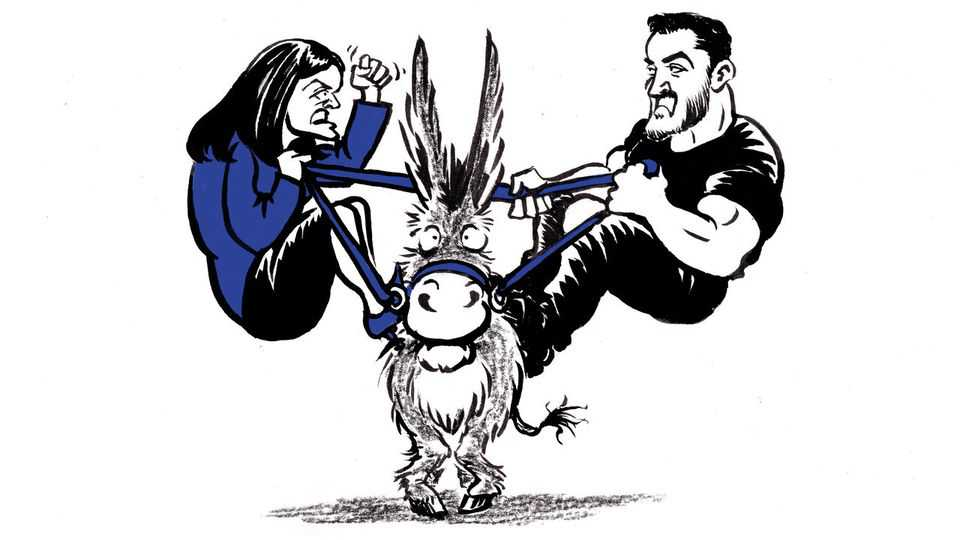

The Michigan Senate primary is a fight for control of the Democrats
Anger at Donald Trump and Israel have given the left an opening

Jul 30th 2026
Abdul El-Sayed, the progressive candidate to be the Democratic nominee for the Senate from Michigan, rejects the label “progressive”. He is not sure what people mean by it, he said after rallying with some of the party’s leading progressives on July 25th before a mostly white crowd in Ferndale, a hipster suburb of Detroit. “I choose the word ‘populist,’” he said, “because I’m for people, and I want people to have more power, versus the elites.”
For her part, Haley Stevens, the moderate in the race, brushes away the adjective “moderate”. She will let other people “do labels”, she said after speaking the next day before a black congregation at Hartford Memorial Baptist Church in Detroit. Yet moments before, when Lexington asked if she would call herself a populist, she had lit up. “Sure,” she said. “I mean, I’d call myself for making a big change for people right now.”
Each candidate is trying to solve the same tricky political equation: how to add together the party’s college-educated activists and its centrists, the Democrats’ coalition since they alienated working-class white voters in Michigan as elsewhere. The winner of the primary, on August 4th, will face Mike Rogers, a former congressman who has converted from old-school Republicanism to Donald Trumpism. The race is vital to Democrats’ hopes of winning a Senate majority. Yet it is hard to shake the suspicion that, for the Democratic leaders passionately backing each candidate, the biggest fear is not that, if nominated, the other one might lose to Mr Rogers. It is instead that he or she might win, tilting the balance of influence in the bitter intraparty struggle.
Call them progressive v moderate or insurgent v establishment, the two camps are increasingly defined by differences not only of policy but also of style, even culture. The candidates in Michigan embody these differences. One is an unflashy party loyalist with a record of electoral and legislative success in Congress, but also of compromise to make that possible, along with a wan social media presence. The other, an anti-elitist with elite credentials, is innocent of Washington service and so online that he has his own digital content company for his own digital content; he also has a vision of national transformation and as much contempt for some of his party’s leaders as for those of the Republicans.
Ms Stevens, who is 43, worked for Barack Obama to rescue the car industry before, in 2018, flipping a Republican district. She has held the seat through three more elections, partly by taking some votes the left despises, including to supply military aid to Israel. That has brought her a poisoned chalice from the American Israel Public Affairs Committee (AIPAC). Through its knavishly named super PAC, United Democracy Project, and affiliated groups, AIPAC has unloaded a shocking sum—close to $30m—on advertising to promote her or assail her opponent.
Dr El-Sayed is the son of immigrants from Egypt. A standout student and athlete at the University of Michigan, he was a Rhodes Scholar at Oxford before completing his medical degree at Columbia University. He went into public health, running the health departments of Detroit and of its home county, Wayne. He ran for governor in 2018 but was crushed in the primary by Gretchen Whitmer, who is finishing her second term and has endorsed Ms Stevens. He went on to host a podcast on health care and co-write a book on Medicare for all, a plank of his campaign.
Dr El-Sayed, 41, has also made a central issue of eliminating military aid to Israel, battering Ms Stevens for her ties to AIPAC. But he is careful to say he also opposes military aid to Egypt. His politics seem calibrated to satisfy the left without scaring Michigan’s centrist voters, who have twice helped elect Mr Trump. He says America is an oligopoly requiring tighter regulation, but he rejects socialism. He wants to abolish Immigration and Customs Enforcement, but he says immigration laws can be enforced without it. When he called to “defund” the police back in 2020, he has said, he was just using a term that was “in vogue”, and he had in mind such measures as investing more in police pensions.
His biceps bulging against his T-shirts, Dr El-Sayed exudes the macho vibe that is becoming a hallmark of the new left—not the soldierly version of Graham Platner, the former Maine Senate candidate, but a fist-bumping, fratty variety. With his obvious intelligence, Dr El-Sayed risks leaving an impression that he regards others as lesser intellects, including his opponent, who he once said could not “string together two coherent sentences.” She has since made a virtue of her heavy Michigan accent and plainer speaking style. At a Teamsters hall in Detroit on July 24th, she said “cool kids on the internet” and “coastal elites” made fun of how she talks. “They’re thinking they’re better than us,” she said.
Yet if the race comes down to who is more persuasively populist, Dr El-Sayed has the edge, and not only because he enthralls the cool kids. In Michigan as elsewhere Democratic voters, furious at Mr Trump and convinced their leaders could do more to thwart him, want to vent. Anger at Ms Stevens over AIPAC and Israel runs so hot among Dr El-Sayed’s supporters that, should she win the primary, she may have the harder time uniting the coalition.
Dr El-Sayed insists he is focused on Michigan, but he aspires to remake the party nationally. On a call with donors disclosed by Politico, he said he wanted to bring moderates into line by putting “one ogre on a pike”, a reference to Senator John Fetterman of Pennsylvania, a heterodox Democrat. Jeff Timmer, a former executive director of the Michigan Republican Party, respects both Democratic candidates. But he worries he is witnessing the rise among Democrats of the same intolerance that, in his party, presaged the arrival of Mr Trump. His fear, he says, is “they’re just ten years behind the Republicans.” ■